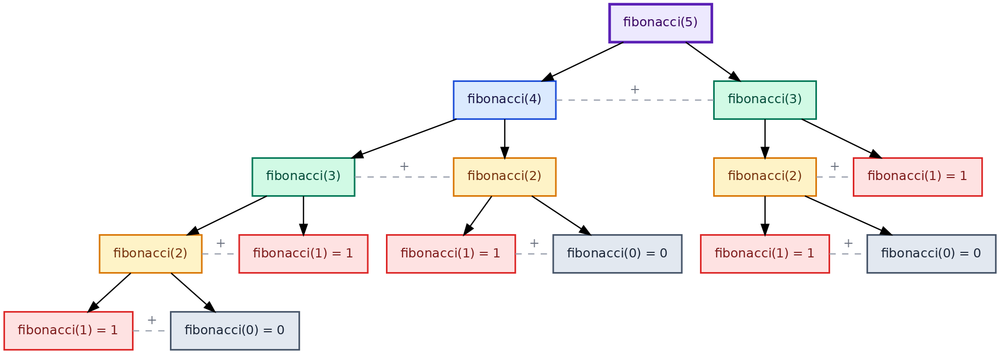
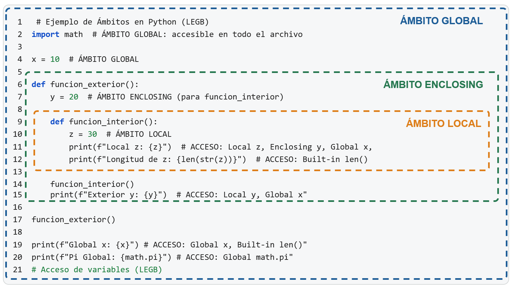

3.1. Definició de funcions, pas de paràmetres i retorn de valors
En matemàtiques, una funció és una regla que associa a cada element d’un conjunt d’entrada exactament un element d’un conjunt de sortida: \(f: A \to B\). En programació, el concepte és anàleg però més ampli: una funció és un bloc de codi amb nom que rep entrades, realitza un càlcul o acció, i retorna un resultat.
La raó fonamental per definir funcions és evitar la repetició de codi. Si el mateix càlcul apareix en diversos llocs del programa, n’hi ha prou amb escriure’l una vegada com a funció i cridar-la tantes vegades com calgui. Això fa el codi més curt, més llegible i més fàcil de mantenir: un error es corregeix en un únic lloc.
Fonament Teòric 1: Funció
En programació, una funció és una unitat de codi amb nom que encapsula una seqüència d’instruccions, accepta zero o més valors d’entrada (paràmetres) i retorna un valor de sortida (valor de retorn).
Les funcions compleixen tres propòsits fonamentals:
Abstracció: oculten els detalls d’implementació darrere d’un nom. L’usuari de la funció només necessita saber què fa, no com ho fa.
Reutilització: permeten executar el mateix codi des de qualsevol punt del programa sense reescriure’l.
Composició: les funcions es poden cridar les unes a les altres, construint operacions complexes a partir de peces simples.
En Python, les funcions són objectes de primera classe: es poden assignar a variables i passar com a arguments a altres funcions, igual que qualsevol altre valor. Aquest comportament s’explorarà en temes posteriors.
3.1.1 Sintaxi bàsica
La paraula clau def introdueix la definició d’una funció:
def nombre(parámetro1, parámetro2, ...):"""Docstring opcional."""# cuerpo de la funciónreturn valor
El cos és un bloc indentat, igual que els blocs if, while i for del Tema 2. La instrucció return especifica el valor que la funció retorna al codi que l’ha cridada. Un cop definida, la funció es crida escrivint el seu nom seguit de parèntesis amb els arguments:
Concepte Clau 1: Anatomia d’una funció
Tota funció en Python té quatre parts:
Capçalera (o signature): def nombre(parámetros): — defineix el nom i els paràmetres d’entrada. Inclou els elements següents:
La paraula clau def: Li indica a Python que estàs a punt de crear una funció.
El nom de la funció: Un identificador clar i descriptiu (per convenció, escrit en minúscules i separat per guions baixos, ex. calcular_area).
Els paràmetres (): Les variables que la funció rep, tancades entre parèntesis. Poden ser obligatoris o tenir un valor per defecte (opcionals, vegeu secció 3.1.2).
Anotacions de tipus o Type Hints (Opcionals): Especifiquen quin tipus de dada s’espera per a cada paràmetre (: tipo) i quin tipus de dada retornarà la funció en acabar (-> tipo). S’expliquen més endavant a la secció 3.3.2.
Els dos punts :: Marquen el final estricte de la capçalera i l’inici del bloc de codi indentat (cos) que contindrà la lògica.
Docstring (opcional però recomanat): cadena de text que documenta què fa la funció. Es tracta a la secció 3.3.
Cos: el bloc indentat amb les instruccions.
Retorn: return expresión retorna el resultat. Si s’omet return, la funció retorna None.
El nom de la funció segueix les mateixes convencions que els noms de variable: snake_case, descriptiu i en minúscules.
Error Freqüent 1: Usar el resultat d’una funció que retorna None
Si una funció no té return, o té un return sense expressió, retorna None. Usar aquest resultat en un càlcul posterior produeix un TypeError difícil de diagnosticar:
L’error més freqüent és confondre imprimir amb retornar: print(x * 2) mostra el valor en pantalla, però la funció segueix retornant None. Tota funció que produeixi un valor ha de tenir un return explícit.
3.1.2 Paràmetres, arguments i valors per defecte
Concepte Clau 2: Paràmetres i arguments d’una funció
En una funció de Python, els paràmetres són els noms que apareixen en la definició de la funció, mentre que els arguments són els valors concrets que se li passen en invocar-la (cridar-la). En essència, els paràmetres actuen com a marcadors de posició (placeholders); són variables temporals que han d’aparèixer en el cos de la funció i li indiquen a l’intèrpret: “aquí hi haurà un valor disponible quan algú invoqui la funció”. Els arguments, per la seva banda, representen les dades reals que ocuparan aquell lloc.
Exemple 1: Paràmetres i arguments d’una funció
En l’exemple següent: - base i exponente són paràmetres de la funció potencia, - 2 i 10 són arguments en la crida potencia(2, 10), - 3 i 3 són arguments en la crida potencia(3, 3).
Paràmetres amb valor per defecte
En Python, pots definir funcions on alguns paràmetres tinguin un valor per defecte. Si qui crida la funció no proporciona aquell argument, Python usa el valor predefinit. És a dir, els paràmetres amb valor per defecte permeten ometre alguns arguments en la crida quan el valor habitual és conegut d’antuvi. Això és molt útil per simplificar el codi quan un paràmetre gairebé sempre usa el mateix valor.
Exemple 2: Paràmetres amb valor per defecte
En l’exemple següent, el paràmetre exponente té un valor per defecte de 2:
si la funció es crida amb un sol argument, com en potencia(5), exponente pren el valor per defecte 2, i la funció calcula \(5^2 = 25\),
si es crida amb dos arguments, com en potencia(5, 3) i potencia(2, 10), el segon argument sobreescriu el valor per defecte de exponente i es calcula \(5^3 = 125\) i \(2^{10} = 1024\) respectivament.
Concepte Clau 3: Regla d’ordre en els paràmetres amb valor per defecte
Els paràmetres amb valor per defecte s’han de col·locar sempre després dels paràmetres sense valor per defecte. Invertir l’ordre produeix un SyntaxError:
# Correctodef f(x, y=0, z=1): ...# SyntaxError: parámetros sin defecto no pueden ir después de los que lo tienendef f(x=0, y): ...
La raó és que Python assigna els arguments posicionalment d’esquerra a dreta: si un paràmetre amb valor per defecte precedís a un sense ell, seria ambigu quin argument correspon a quin paràmetre.
Exemple 3: Mètodes de Newton-Raphson per a \(\sqrt{x}\)
Un exemple matemàtic que il·lustra bé els paràmetres amb valor per defecte és el mètode de Newton-Raphson per aproximar \(\sqrt{x}\), que accepta el valor \(x\) i una tolerància (tol) opcional:
en la crida raiz_cuadrada(2) s’usa la tolerància per defecte de \(10^{-10}\), i el resultat és molt precís,
en la crida raiz_cuadrada(2, tol=1e-4) s’especifica una tolerància menys estricta, i el resultat és menys precís però s’obté més ràpidament.
Arguments de paraula clau (keyword arguments)
En Python, un argument de paraula clau (keyword argument) és aquell que es passa en la crida a una funció usant el nom del paràmetre explícitament, en lloc de dependre de la seva posició:
Els keyword arguments són especialment útils quan una funció té diversos paràmetres amb valor per defecte, ja que permeten especificar només els que es volen modificar sense necessitat de respectar l’ordre:
def raiz_cuadrada(x, tol=1e-10, max_iter=1000): ...raiz_cuadrada(2, tol=1e-6) # solo se modifica tolraiz_cuadrada(2, max_iter=50) # solo se modifica max_iter
La connexió entre tots dos conceptes és freqüent però no necessària: els paràmetres amb valor per defecte es defineixen en la capçalera o signature de la funció; els keyword arguments són una forma de cridar-la. Qualsevol paràmetre, tingui o no valor per defecte, es pot passar per nom.
Concepte Clau 4: Paràmetres exclusivament de paraula clau
Python permet declarar paràmetres que només es poden passar per nom, mai posicionalment. S’aconsegueix col·locant * abans d’ells en la definició:
Aquesta tècnica és útil quan un paràmetre és opcional i el seu nom afegeix claredat imprescindible en la crida. Queda fora de l’abast d’aquest tema però convé conèixer-ne l’existència.
3.1.3 Recursió
Una funció es pot cridar a si mateixa dins del seu propi cos. Aquesta tècnica s’anomena recursió i és especialment natural per a càlculs que s’expressen matemàticament en termes d’ells mateixos.
Fonament Teòric 2: Recursió
Una funció és recursiva quan el seu cos conté una crida a si mateixa. Perquè la recursió acabi i no produeixi un bucle infinit, tota funció recursiva ha de tenir:
Cas base: una o diverses condicions sota les quals la funció retorna un resultat directament, sense cridar-se de nou.
Cas recursiu: la crida a si mateixa amb un argument estrictament més proper al cas base.
La recursió és la traducció directa a codi de les definicions matemàtiques per recurrència.
L’exemple canònic és el factorial, la definició matemàtica del qual és recursiva:
\[n! = \begin{cases} 1 & \text{si } n = 0 \\ n \cdot (n-1)! & \text{si } n \geq 1 \end{cases}\]
Cada crida a factorial(n) genera una crida a factorial(n-1), i així successivament fins arribar a factorial(0), que retorna 1 directament. El resultat final es construeix en desfer la pila de crides:
El màxim comú divisor de dos enters \(a\) i \(b\) (amb \(b \neq 0\)) es defineix de forma recursiva per l’algorisme d’Euclides, basat en la identitat \(\text{mcd}(a, b) = \text{mcd}(b,\, a \bmod b)\):
\[
\text{mcd}(a, b) = \begin{cases} a & \text{si } b = 0 \\ \text{mcd}(b,\; a \bmod b) & \text{si } b \neq 0 \end{cases}
\]
La traducció a Python és immediata:
El nombre de crides recursives és \(O(\log \min(a, b))\), la qual cosa fa l’algorisme extremadament eficient.
mcd(48, 18) = mcd(18, 48 mod 18) = mcd(18, 12)
= mcd(12, 18 mod 12) = mcd(12, 6)
= mcd(6, 12 mod 6) = mcd(6, 0)
= 6
A partir del MCD s’obté el mínim comú múltiple: \[
\text{mcm}(a, b) = |a \cdot b| \,/\, \text{mcd}(a, b).
\]
Exemple 5: Fibonacci recursiu
La successió de Fibonacci també té una definició recursiva molt elegant atès que \(F(n) = F(n-1) + F(n-2)\). És a dir, el còmput es defineix en termes de \(F\) mateixa. Els casos base són \(F(0) = 0\) i \(F(1) = 1\). La implementació directa és molt simple (substituïm \(F(n)\) per fibonacci(n)):
Tanmateix, fibonacci(n) amb la implementació anterior té cost (complexitat temporal) exponencial \(O(2^n)\): per calcular fibonacci(40) es realitzen més de mil milions de crides, perquè cada valor es recalcula repetidament des de zero o u. La versió iterativa del Tema 2 és infinitament més eficient.
La recursió és una eina potent però no sempre eficient; triar entre recursió i iteració exigeix considerar el cost computacional.

Figura 1: Arbre de crides recursives de fibonacci(5). Les línies puntejades indiquen la suma pendent entre els dos subproblemes de cada node.
La ineficiència de la implementació anterior té una causa concreta tal com s’observa en l’arbre de crides mostrat a la Figura 1: fibonacci(3) es calcula dues vegades, fibonacci(2) tres vegades, i així successivament.
Vegem això mesurant el temps d’execució de versions iteratives i recursives del càlcul de termes de la successió de Fibonacci. Per a això en el codi següent s’importa el mòdul time (natiu de Python) i es mesura el temps d’execució de cada versió amb time.perf_counter():
Error Freqüent 2: Oblidar el cas base → RecursionError
Si la funció recursiva no té cas base, o la condició d’aturada mai s’assoleix, Python esgota la pila de crides i llança un RecursionError:
def factorial_roto(n):return n * factorial_roto(n -1) # sin caso basefactorial_roto(5) # RecursionError: maximum recursion depth exceeded
Abans d’escriure el cas recursiu, escriu i prova sempre el cas base per separat.
Assegura’t que la crida recursiva es fa amb un argument que s’acosta al cas base.
Si l’argument no canvia o s’allunya del cas base, la recursió serà infinita.
3.1.4 Funcions generadores
En una funció ordinària, return lliura un únic valor i acaba l’execució. Les funcions generadores amplien aquest model: en lloc de calcular tots els valors d’una seqüència i retornar-los de cop, produeixen els valors un a un i sota demanda, pausant l’execució en cada lliurament i reprenent-la quan se’n sol·licita el següent. Això les converteix en l’eina natural per representar seqüències llargues o fins i tot infinites sense consumir memòria proporcional a la seva mida.
La paraula clau que distingeix una funció generadora d’una funció ordinària és yield. Quan Python troba yield expr dins d’una funció, suspèn l’execució, lliura el valor de expr al codi que la crida, i desa l’estat intern (variables locals, punt d’execució) per poder reprendre’l més endavant.
Fonament Teòric 3: Funció generadora
Una funció generadora és una funció que conté almenys una instrucció yield. Cridar-la no executa el seu cos: retorna un objecte generador (un iterador mandrós). Els valors es produeixen un a un cada vegada que el generador avança, ja sigui amb la funció integrada next() o implícitament mitjançant un bucle for.
L’analogia més propera que ja coneixes és range(): range(10) no crea una llista de deu enters en memòria, sinó un objecte que els produeix quan se li demana. Les funcions generadores són la manera de definir objectes similars per a qualsevol seqüència pròpia.
Exemple 6: Generador de la successió de Fibonacci
La recursió calcula \(F(n)\) en \(O(2^n)\) crides. Un generador produeix tots els termes en \(O(1)\) memòria i \(O(1)\) treball per terme:
El generador no acaba per si sol: és responsabilitat del codi que l’usa decidir quan aturar-se. Intentar convertir-lo en llista amb list(fibonacci()) esgotaria la memòria.
Exemple 7: Generador de nombres primers
Un generador de primers permet iterar sobre la successió de primers sense calcular-los tots per endavant ni limitar el rang a priori:
Error Freqüent 3: Un generador només es pot recórrer una vegada
A diferència d’una llista, un generador s’esgota en completar la seva seqüència. Un cop esgotat, qualsevol crida a next() llança StopIteration i un bucle for acaba immediatament sense iterar:
gen = contar(3)print(list(gen)) # [1, 2, 3]print(list(gen)) # [] — generador agotado, no produce más valores
Si necessites recórrer la seqüència diverses vegades, crea un nou objecte generador cada vegada cridant de nou la funció: gen = contar(3).
3.2. Visibilitat de variables (Scope)
Quan Python troba un nom de variable dins d’una funció, necessita saber a quin objecte es refereix. L’àmbit o scope d’una variable determina des de quines parts del codi aquell nom és visible.
Fonament Teòric 4: Àmbit (Scope) i espai de noms (Namespace)
L’àmbit (scope) d’una variable és la regió del codi en la qual el nom d’aquella variable és reconegut i pot usar-se. L’espai de noms (namespace) és l’estructura interna de Python que implementa l’àmbit: un diccionari que mapeja noms a objectes.
Python busca els noms seguint la regla LEGB, en aquest ordre:
Local — el cos de la funció actual.
Enclosing — funcions que embolcallen l’actual (funcions niuades, temes posteriors).
Global — el mòdul (el fitxer .py) en el qual és el codi.
Built-in — els noms predefinits de Python: print, len, int, range…
Si el nom no es troba en cap d’aquests àmbits, Python llança un NameError.
3.2.1 Àmbit local
Tota variable que s’assigna dins d’una funció és local a aquella funció: existeix només durant l’execució de la crida i desapareix en retornar.
L’àmbit local garanteix l’aïllament: dues funcions poden usar el mateix nom de variable sense interferir entre si.
3.2.2 Àmbit global
Les variables definides fora de qualsevol funció tenen àmbit global i són visibles des de qualsevol punt del mòdul, inclòs el cos de les funcions. En Python, un mòdul és simplement un fitxer .py. Quan escrius codi en programa.py i l’executes, aquell fitxer és el teu mòdul. Els mòduls es tracten en detall a la secció 3.4.
Llegir una variable global des d’una funció és acceptable, especialment per a constants matemàtiques o de configuració. Modificar-la des de dins d’una funció és una pràctica que convé evitar.
Error Freqüent 4: Modificar variables globals amb global
Python permet modificar una variable global des de dins d’una funció usant la declaració global, però és una pràctica que dificulta la comprensió i el manteniment del codi:
contador =0def incrementar():global contador # sin esta línea, Python crearía una variable local contador +=1incrementar()incrementar()print(contador) # 2
El problema és que incrementar() té un efecte lateral (side effect) ocult: modifica un estat extern sense que això sigui visible en la seva signatura. Si la funció es crida des de diversos punts del programa, rastrejar el valor de contador es torna molt difícil.
L’alternativa correcta és passar el valor com a paràmetre i retornar el nou valor:
Aquesta versió és transparent: el seu comportament queda completament determinat pels seus arguments i no produeix cap efecte lateral.
En Python les variables declarades en un cicle for pertanyen al mateix àmbit en el qual és el cicle. Si el for és en el cos d’una funció, la variable és local a aquella funció; si és a nivell de mòdul, és global:
Això contrasta amb llenguatges com C o Java, on la variable del for queda confinada al bloc del bucle. En Python no hi ha àmbit de bloc: només funció (local), mòdul (global) i built-in.
3.2.3 Àmbit enclosing
L’àmbit enclosing apareix quan una funció es defineix dins d’una altra funció. La funció interna pot llegir les variables de la funció que la conté, tot i que aquelles variables no siguin locals ni globals:
La variable y no és local de funcion_interior (no es defineix allà) ni és global (és dins de funcion_exterior): viu en l’àmbit enclosing. Python la troba seguint la cadena L → E → G → B.

Figura 2: Àmbits respecte a funcion_interior.
A la figura Figura 2 es mostra la jerarquia d’àmbits quan l’intèrpret de Python es troba a l’interior de funcion_interior. S’observa que en aquest cas l’àmbit local de funcion_exterior és l’àmbit enclosing de funcion_interior. La variable x és visible des de funcion_interior ja que es troba en l’àmbit global. També l’ús de la funció len() és possible perquè està definida en l’àmbit built-in.
3.3. Docstrings, anotacions de tipus i contractes
Una funció ben escrita no només calcula correctament: també comunica clarament què fa, què espera rebre i què garanteix retornar. Aquesta informació forma el contracte de la funció. Python proporciona mecanismes complementaris per expressar-lo de forma estàtica (amb docstrings i anotacions de tipus) i per fer-lo complir en execució (mitjançant la gestió d’excepcions i validacions). Les bones pràctiques del Python modern exigeixen l’ús de docstrings i type hints perquè transformen un codi ambigu en una arquitectura robusta, predictible i autodescriptiva.
La generació de docstrings i type hints és un dels casos d’ús on eines com GitHub Copilot, Cursor o ChatGPT (entre moltes altres) destaquen i estalvien més temps, ja que és una feina repetitiva però altament estructurada. Escriure documentació manual és tediós, però les IA la generen en segons analitzant la lògica interna de la funció. Per això el que importa és entendre què és un docstring i què són les anotacions de tipus, per poder revisar-les i corregir-les si la IA s’equivoca. En les sessions pràctiques es veurà com usar GitHub Copilot per generar docstrings i type hints automàticament.
3.3.1 Docstrings
Fonament Teòric 5: Docstring
Un docstring és una cadena de text que apareix com a primera instrucció en el cos d’una funció (o mòdul, o classe) i descriu el seu propòsit, paràmetres i valor de retorn. Python l’emmagatzema en l’atribut __doc__ de l’objecte i la fa accessible en temps d’execució mitjançant la funció help().
Els docstrings no són comentaris: els comentaris amb # van dirigits al lector del codi font; els docstrings van dirigits a l’usuari de la funció i es poden consultar sense llegir la implementació.
Docstring d’una línia: per a funcions el propòsit de les quals és evident.
Docstring multilínia: per a funcions més complexes. La primera línia és el resum; després d’una línia en blanc, es detallen els paràmetres i el valor de retorn.
3.3.2 Anotacions de tipus (type hints)
Les anotacions de tipus permeten declarar el tipus esperat de cada paràmetre i del valor de retorn directament en la capçalera de la funció (Rossum, Lehtosalo, i Langa 2015):
Concepte Clau 5: Sintaxi de les anotacions de tipus
La sintaxi és:
def nombre(param: tipo, param2: tipo = defecto) -> tipo_retorno:
Els tipus bàsics disponibles sense importar res són int, float, str, bool i None (per a funcions que no retornen valor). Per indicar que una funció no retorna res s’anota -> None.
Les anotacions de tipus no es comproven en temps d’execució: Python les ignora en executar el codi. El seu valor és doble: serveixen de documentació llegible per al programador i són usades per eines d’anàlisi estàtica com mypy i el propi VS Code per detectar errors i oferir autocompletat.
Atès que Python no comprova els tipus en temps d’execució, una funció anotada es pot cridar amb arguments del tipus equivocat sense que es produeixi cap error immediat. Les anotacions de tipus documenten la intenció però no substitueixen la validació explícita d’arguments quan aquesta sigui necessària.
3.3.3 Precondicions, postcondicions i el contracte d’una funció
Fonament Teòric 6: Contracte d’una funció
El contracte d’una funció especifica formalment:
Precondició: el que ha de ser cert sobre els arguments abans de cridar la funció. Si el cridador no satisfà la precondició, el comportament de la funció és indefinit.
Postcondició: el que la funció garanteix sobre el seu resultat quan la precondició es compleix.
Aquest concepte prové del disseny per contracte (Design by Contract, Bertrand Meyer) i és l’equivalent programàtic del parell hipòtesi–tesi d’un teorema matemàtic: si es compleixen les hipòtesis (precondició), es garanteix la conclusió (postcondició).
Les precondicions i postcondicions s’expressen en Python de dues formes complementàries:
Via docstring: especificació en text natural, visible amb help() i llegible sense executar el codi. És la forma preferida per documentar el contracte de cara a l’usuari de la funció.
Via assert: comprovació activa en temps d’execució. Llança un AssertionError amb un missatge descriptiu si la condició falla, la qual cosa facilita detectar usos incorrectes de la funció durant el desenvolupament.
Exemple 8: Precondició i postcondició en docstrings i assert
El següent exemple mostra les dues vies esmentades anteriorment aplicades a la mateixa funció raiz_cuadrada(), que aproxima \(\sqrt{x}\) mitjançant el mètode de Newton-Raphson. La precondició és que \(x\) sigui no negatiu i la tolerància positiva; la postcondició és que l’error de l’aproximació sigui menor que tol * 100:
Error Freqüent 5: assert es pot desactivar
Les instruccions assert s’eliminen quan Python s’executa amb l’opció -O (optimize). Per això, assert és adequat per verificar condicions durant el desenvolupament —detectar errors de programació en les proves— però no per validar entrades de l’usuari en producció. Per gestionar entrades incorrectes del món exterior s’usa raise:
if x <0:raiseValueError(f"x debe ser no negativo, recibido {x}")
Els assert comproven que el programador usa la funció correctament; els raise gestionen entrades incorrectes externes. El mecanisme raise/except s’estudia al Tema 4.
3.4. Concepte de mòdul. Importació i creació de mòduls propis
A mesura que un programa creix, concentrar tot el codi en un únic fitxer es torna inmanejable. Els mòduls són la solució de Python per organitzar el codi en unitats reutilitzables i independents.
Fonament Teòric 7: Mòdul
Un mòdul en Python és un fitxer .py que conté definicions de funcions, variables i altres objectes. El seu nom és el nom del fitxer sense l’extensió .py. Els mòduls permeten:
Separar el codi en unitats amb una responsabilitat clara.
Reutilitzar funcions en distints programes sense copiar-les.
Ocultar detalls d’implementació: l’usuari importa i crida funcions sense necessitat de conèixer com estan escrites internament.
Des del Tema 2 s’usa import math: math és un mòdul de la biblioteca estàndard de Python. Les seves funcions (sqrt, log, sin, etc.) estan definides amb el mateix mecanisme que qualsevol mòdul propi.
3.4.1 Importació de mòduls
Python ofereix tres formes d’importar un mòdul o els seus continguts:
Concepte Clau 6: Formes d’importació
Forma 1 — import módulo: importa el mòdul complet; els noms s’accedeixen amb la notació punt.
Forma 2 — import módulo as alias: igual que l’anterior, amb un nom més curt.
Forma 3 — from módulo import nombre: importa només els noms especificats, directament a l’espai de noms local.
La Forma 1 és la més recomanable en general perquè fa explícit l’origen de cada nom (math.sqrt deixa clar que sqrt ve de math). La Forma 3 és convenient per a noms molt usats, però pot causar conflictes si dos mòduls defineixen el mateix nom.
Alguns mòduls de la biblioteca estàndard especialment útils en matemàtiques:
Mòdul
Contingut principal
math
Funcions reals: sqrt, log, sin, cos, exp; constants pi, e, inf
cmath
Versions complexes de les funcions de math
random
Generació de nombres pseudoaleatoris
statistics
Mitjana, mediana, variància i desviació típica
fractions
Aritmètica exacta amb fraccions racionals
decimal
Aritmètica decimal de precisió arbitrària
3.4.2 Creació de mòduls propis
Qualsevol fitxer .py és automàticament un mòdul importable des d’un altre fitxer del mateix directori. Per crear un mòdul propi n’hi ha prou amb escriure les funcions en un fitxer amb un nom descriptiu.
Exemple 9: Mòdul numeros
El fitxer numeros.py agrupa algunes de les funcions de teoria de nombres construïdes al llarg del Tema 2 i el Tema 3:
# numeros.py"""Módulo con funciones básicas de teoría de números."""import mathdef es_primo(n: int) ->bool:"""Devuelve True si n es primo (n debe ser >= 2)."""if n <2:returnFalsefor d inrange(2, int(math.sqrt(n)) +1):if n % d ==0:returnFalsereturnTruedef mcd(a: int, b: int) ->int:"""Máximo común divisor de a y b (algoritmo de Euclides)."""if b ==0:return areturn mcd(b, a % b)def mcm(a: int, b: int) ->int:"""Mínimo común múltiplo de a y b."""returnabs(a * b) // mcd(a, b)def factorial(n: int) ->int:"""Factorial de n. Precondición: n >= 0."""assert n >=0, f"factorial no está definido para negativos, recibido {n}"if n ==0:return1return n * factorial(n -1)if__name__=="__main__":# Solo se ejecuta al lanzar: python numeros.pyprint("=== Pruebas del módulo numeros ===")print(f"es_primo(17) = {es_primo(17)}") # Trueprint(f"es_primo(18) = {es_primo(18)}") # Falseprint(f"mcd(48, 18) = {mcd(48, 18)}") # 6print(f"mcm(4, 6) = {mcm(4, 6)}") # 12print(f"factorial(10) = {factorial(10)}") # 3628800
Des d’un altre fitxer del mateix directori s’importa com qualsevol mòdul de la biblioteca estàndard:
Quan Python carrega un mòdul mitjançant import, executa tot el seu codi de nivell superior. Això planteja un problema si el mòdul conté proves o demostracions que no volem executar en importar-lo.
Concepte Clau 7: El bloc if __name__ == "__main__"
Python assigna automàticament a cada mòdul una variable especial __name__:
Quan el fitxer s’executa directament (python numeros.py), __name__ pren el valor "__main__".
Quan el fitxer s’importa des d’un altre mòdul, __name__ pren el nom del mòdul ("numeros").
El bloc if __name__ == "__main__": permet incloure en el mateix fitxer tant la biblioteca (importable) com un petit programa de prova executable directament amb python numeros.py. El codi dins d’aquest bloc només s’executa quan el mòdul es llança com a programa, i no quan s’importa.
Aquest patró és la pràctica estàndard en Python: el mateix fitxer pot actuar com a biblioteca (importat per altres mòduls) o com a programa (executat directament), i el bloc if __name__ == "__main__": separa nítidament tots dos rols.
3.5. Organització de projectes
A mesura que un projecte creix, dividir el codi en mòduls amb responsabilitats ben definides facilita el manteniment, la detecció d’errors i la col·laboració. Organitzar un projecte en Python correctament des del principi és fonamental per assegurar que el codi sigui escalable, reproduïble i fàcil de mantenir. Actualment, la comunitat de Python ha convergit en un conjunt d’estàndards molt clars, allunyant-se dels scripts solts i adoptant eines modernes.
3.5.1 Estructura de fitxers
L’estructura més recomanada per la Python Packaging Authority (PyPA) utilitza una carpeta src/ per contenir el codi font, separant així el codi dels tests i de la documentació. L’organització d’un exemple de projecte, titulat t03_ejemplo, seria:
t03_ejemplo/
├── .gitignore # Archivos que Git no debe rastrear
├── pyproject.toml # Configuración central del proyecto y dependencias
├── README.md # Documentación principal
├── src/ # Contenedor del código fuente
│ └── t03_paquete/ # Tu paquete de Python real
│ ├── __init__.py # Convierte la carpeta en paquete (puede estar vacío)
│ ├── main.py # Punto de entrada del programa
│ ├── numeros.py # Funciones de teoría de números
│ ├── geometria.py # Funciones de geometría
│ └── conversor.py # Funciones de conversión de unidades
├── tests/ # Pruebas automatizadas (separadas del código fuente)
│ ├── conftest.py # Configuración y "fixtures" para pytest
│ └── test_numeros.py # Pruebas específicas para numeros.py (se verán en el Tema 5)
└── docs/ # Archivos de documentación
Cada mòdul (fitxer .py sota src/mi_paquete/) agrupa funcions relacionades per temàtica o responsabilitat. main.py actua com a punt d’entrada: importa els mòduls que necessita i orquestra la lògica principal del programa.
Python busca els mòduls al mateix directori que el fitxer que els importa, sense necessitat de configuració addicional. Aquesta estructura funciona directament en un entorn local i en un Codespace.
Concepte Clau 8: Mòduls amb una única responsabilitat
Un mòdul ha de fer una cosa bé. Si un mòdul comença a agrupar funcions de geometria i també d’estadística, és senyal que hauria de dividir-se en dos. La pregunta de disseny és sempre: què tenen en comú les funcions d’aquest mòdul?
Mantén els mòduls petits
Una guia pràctica:
menys de 500 línies: ideal
entre 500 i 1000: revisar si convé dividir
més de 1000: normalment mereix una refactorització
No és una regla estricta, però ajuda a mantenir el codi manejable.
3.5.2 Exemple de mòduls del projecte t03_ejemplo
El projecte t03_ejemplo, amb l’estructura presentada anteriorment, inclou a més de numeros.py, altres tres mòduls geometria.py, conversor.py i main.py amb responsabilitats distintes que es presenten a continuació.
Exemple 10: Mòdul geometria en fitxer geometria.py
"""Módulo de funciones geométricas básicas."""import mathdef area_circulo(r: float) ->float:"""Área de un círculo de radio r. Precondición: r >= 0."""assert r >=0, f"El radio debe ser no negativo, recibido {r}"return math.pi * r **2def hipotenusa(a: float, b: float) ->float:"""Longitud de la hipotenusa dado los catetos a y b."""assert a >0and b >0, "Los catetos deben ser positivos"return math.sqrt(a **2+ b **2)def es_triangulo_valido(a: float, b: float, c: float) ->bool:"""True si a, b, c satisfacen la desigualdad triangular."""return a >0and b >0and c >0and a + b > c and a + c > b and b + c > aif__name__=="__main__":print(f"Área círculo r=1: {area_circulo(1):.6f}")print(f"Hipotenusa 3, 4: {hipotenusa(3, 4):.6f}")print(f"Triángulo 3, 4, 5: {es_triangulo_valido(3, 4, 5)}")print(f"Triángulo 1, 2, 10: {es_triangulo_valido(1, 2, 10)}")
Exemple 11: Mòdul conversor en fitxer conversor.py
"""Módulo de conversión de unidades."""def celsius_a_fahrenheit(c: float) ->float:"""Convierte grados Celsius a Fahrenheit."""return9/5* c +32def fahrenheit_a_celsius(f: float) ->float:"""Convierte grados Fahrenheit a Celsius."""return5/9* (f -32)def celsius_a_kelvin(c: float) ->float:"""Convierte grados Celsius a Kelvin. Precondición: c >= -273.15."""assert c >=-273.15, f"Temperatura por debajo del cero absoluto: {c}"return c +273.15def radianes_a_grados(r: float) ->float:"""Convierte radianes a grados."""import mathreturn r *180/ math.pidef grados_a_radianes(g: float) ->float:"""Convierte grados a radianes."""import mathreturn g * math.pi /180if__name__=="__main__":print(f"100 °C en °F: {celsius_a_fahrenheit(100):.2f}")print(f"212 °F en °C: {fahrenheit_a_celsius(212):.2f}")print(f"0 °C en K: {celsius_a_kelvin(0):.2f}")print(f"π rad en °: {radianes_a_grados(3.141592653589793):.4f}")
Exemple 12: Mòdul main en fitxer main.py
Mitjançant main.py s’importen els mòduls i es coordina la interacció amb l’usuari. Aquesta separació entre lògica de negoci (els mòduls) i punt d’entrada (main.py) és una pràctica de disseny fonamental.
"""Herramienta matemática interactiva."""from t03_paquete import numeros, geometria, conversordef mostrar_menu() ->None:print("\n=== Herramienta matemática ===")print(" 1. Test de primalidad")print(" 2. MCD de dos enteros")print(" 3. Área de un círculo")print(" 4. Conversión de temperatura (°C → °F)")print(" 0. Salir")print("------------------------------")def ejecutar() ->None:whileTrue: mostrar_menu() opcion =input("Elige una opción: ")if opcion =="1": n =int(input("n: "))print(f"{n} es primo: {numeros.es_primo(n)}")elif opcion =="2": a =int(input("a: ")) b =int(input("b: "))print(f"mcd({a}, {b}) = {numeros.mcd(a, b)}")elif opcion =="3": r =float(input("Radio: "))print(f"Área = {geometria.area_circulo(r):.6f}")elif opcion =="4": c =float(input("Temperatura en °C: "))print(f"{c} °C = {conversor.celsius_a_fahrenheit(c):.2f} °F")elif opcion =="0":print("Hasta luego.")breakelse:print("Opción no válida.")if__name__=="__main__": ejecutar()
El projecte complet t03_ejemplo està disponible al repositori del curs: https://github.com/UIB-23200-Programacion/t03_ejemplo. No cal que et concentris a memoritzar tots els detalls de l’estructura, ja que el projecte exemple té implementades les millors pràctiques explicades amunt i el podràs reutilitzar en els teus propis repositoris. El que importa és comprendre el patró general i la filosofia de disseny que subjau. El que és veritablement fonamental és entendre el codi en els mòduls numeros.py, geometria.py, conversor.py i en l’script main.py que s’han presentat anteriorment.
S’observa a més que les funcions dels mòduls numeros.py, geometria.py i conversor.py estan documentades amb docstrings i anotacions de tipus. Un dels exercicis de la pràctica consistirà a afegir funcions a aquests mòduls amb la corresponent documentació generada mitjançant l’ús de GitHub Copilot.
Bibliografia
Goodger, David, i Guido van Rossum. 2001. «PEP 257 – Docstring Conventions». Python Enhancement Proposal. https://peps.python.org/pep-0257/.
Rossum, Guido van, Jukka Lehtosalo, i Łukasz Langa. 2015. «PEP 484 – Type Hints». Python Enhancement Proposal. https://peps.python.org/pep-0484/.